Research & Resources
The EEG library
Fifty years of knowledge and history in one place: historical public-interest reports, essays, the Complete Harmony chapters and our archives from the 1972 UN conference.
No items match your search. Try a different word, or choose “All”.

EEG's Historical Public Interest Reports
Nuclear Power Plants
Nuclear Terrorism
Energy Options
Solutions to the Energy Crisis
Clean & Abundant Solutions
Limits to Growth
Food & Population
Solutions to Automotive Air Pollution
Solutions to Stationary Sources of Air Pollution
Fluoride Fallout From Factories
Noise Pollution & Silencing the problem
The Sustainable Planet & The Total Vantage Point
Essay · Part 1
When dealing with issues as powerful as pollution and water and energy deficits, as well as hunger and war, EEG recognizes where those tragic problems and imbalances actually come from.
As many great poets, authors, prophets, philosophers, etc. have so eloquently pointed out, those issues and those problems come from within each of us.
Read the full essay
Einstein said ‘you can't solve a problem with the same level of consciousness that created it’ and we see this exactly that way. The surface mind is literally blindfolded as it stumbles through evolution. It is only through the inspiration of the deeper consciousness or the subconscious that it begins to see the light and the endless ocean of harmony that lies deeper within itself.
Isn't it wonderful that in this century, we now have actual guidance that shows us step by step how to solve these imbalances within us fully, individually, completely and forever. And we now understand that it is those imbalances, and that personal disharmony that is the root of wars and poverty and the cause of all of the man made disasters on our planet, as well as the root of personal confusion, instabilities, and dependencies.
For the most part, it is difficult to recognize the root of this disharmony, however at times we certainly see the results of it. We do notice as it reflects our un-peaceful personal consciousness and how we may get caught up in agitation, disharmony, then speculation, prejudice and superiority, all resulting in different levels of personal imbalance. These personal imbalances result in collective catastrophic imbalances like in wars, poverty, and all man made disharmonies. Whether we know it or not we are at war with our own selves in different degrees in some level of our own personal darkness that we might not even be aware of.
In our natural response to life we are socially conditioned to ignore, or hide from most of this darkness and disharmony. Yet if that darkness and confusion did not exist there would obviously be no imbalance, including wars, etc. in us personally or collectively. I mean if everyone was in complete harmony how could there be.
If we could look at that unbalanced darkness with-in ourselves as an individual deficit that requires an individual solution, (and only an individual solution could make that resolution to be a permanent);
If we could call that darkness a type of personal ignorance, that deeper ‘evolving ideas’ could bring permanent solutions to. If we could realize that our weakness to our own darkness stems from our dependency on others perspectives; we could then begin to understand how we are caught up in the collective thinking processes. If we could understand collective thinking processes have us responding with less personal current perspectives, and more from old concepts and attitudes of disharmony, we could then realize that many of those pivotal world disruptive disharmonies, have been handed down to us with ideas that never worked completely, and certainly are not working completely or efficiently now.
Let's say that each of us needed light, like the suns light or the light bulb type of light and we wanted to be able to permanently solve our own light needs, and there was a way we could learn how to do that. A workshop if you will. Now if we could look at that individual need for light as a personal problem to be solved and our individual ability to solve that problem as a personal as well as collective solution, due to that fact that our solution would benefit us individually as well as collectively, because there would be one less person that needed light. We would have discovered the root of the problem and the ultimate ‘idea’ solution. If each of us can produce light from our own individual selves, we have solved the light problem completely and permanently.
Our organization has workshops with evolved ideas and solutions that work. We will donate our time and energies to teach you all you need to know about finding your own personal, permanent solution. We can show you from the ground up how to discover your own internal, personal infinite harmony. Our workshops help you discern the darkness and disharmonies within you and help you discover your own light.
Discovering your own light will be solving personal disharmonies and imbalances and stopping the collective catastrophic world destroying imbalance, ‘one individual solution at a time’.
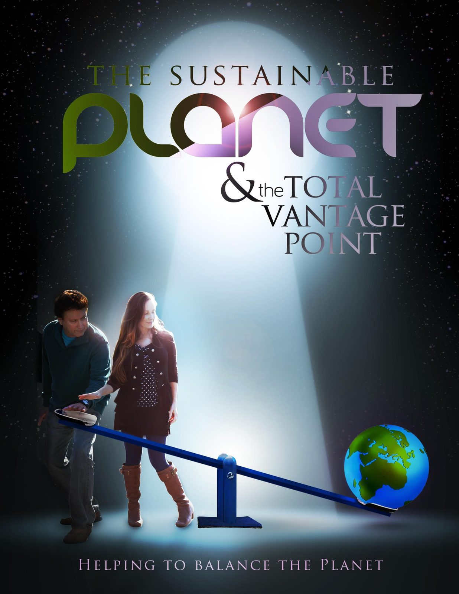
“More and more of us are understanding, that if we are going to help bring balance to our planet, we are going to have to take steps to bring balance to ourselves.”Lielle Arad, excerpt from “The Sustainable Planet & the Total Vantage Point”
Essay · Continued
The Sustainable Planet & The Total Vantage Point Cont'd
All of our projects developers believe that there is no greater wealth sociologically and individually, than venturing into the atmosphere that helps to bring balance, peace, real stability and permanent security to our selves individually and also collectively to our planet.
Read the continuation
Isn't it wonderful that we now have these new jewels of understanding coming to our people at this time in our evolution that are clarifying problems that have baffled mankind for all of history? Up till now, we have had no real long term solutions for our worlds major problems, just lots of band aids. But we now have those organic and custom long-term root healing solutions available. Bring us your questions and suggestions and ways you might want to help or be involved. Understand; we are not bringing forth these precious beneficial insights to compete with anyone or any path or philosophy. It is rather just the opposite. We consider all experiences to be stepping-stones in that discovery of the ultimate self. So our goal is simply providing new evolved insights and new evolved real solutions to any and all people that are inspired to hear them.
If we had a goal it would be to, inspire a sense of responsibility in each of you as you set out to gain funding, wealth, personal balance, deeper insights as well as, acknowledgment through your arts, music or businesses, innovations and inventions, in dealing with the world and communicating your talents, a strong sense of responsibility, that leaves the footprint of balance, as opposed to further taking our planet off course into a still further gloomy future.
Things like, global warming, world poverty, ever increasing and accumulating non-degradable garbage, and various other ways of adding to the ever-growing destruction of our planet and the life on it and around it.
So, we would highly advise that we as a people should never stop looking for those answers that bring our planet and our people into more and more harmony. If we do, we would be limiting ourselves.
Bringing our planet into balance is our future and is the direction to take for personal as well as collective success.
So, we endeavor to remember being successful is great, and we want to help you be successful, but not at the expense of everyone else's destruction, where it takes the planet out of balance in the process. Because the way things are going, the lack of responsibility will continue to deteriorate our planet and there will not be a planet for us, or our children to enjoy our success in.
We are dedicated and inspired to make those changes that are needed in our world, because we know and understand ‘that’ depreciating affect, and as much as anyone may try to ignore it, that affect is in the process of depreciating our entire future planet. It is not hard to see that depreciating affect and how it is well on its way to taking over in some parts of our world. We at Environmental Education Group cannot ignore that, and we are committed to making those changes our world needs to gain its balance period. And we hope you will join us.
Environmental research & educational materials
Global Warming Continues to smother life.
What happens on one side of the planet, it's become clear. It affects what's on the other side of the planet. And everything on it. Or in it.
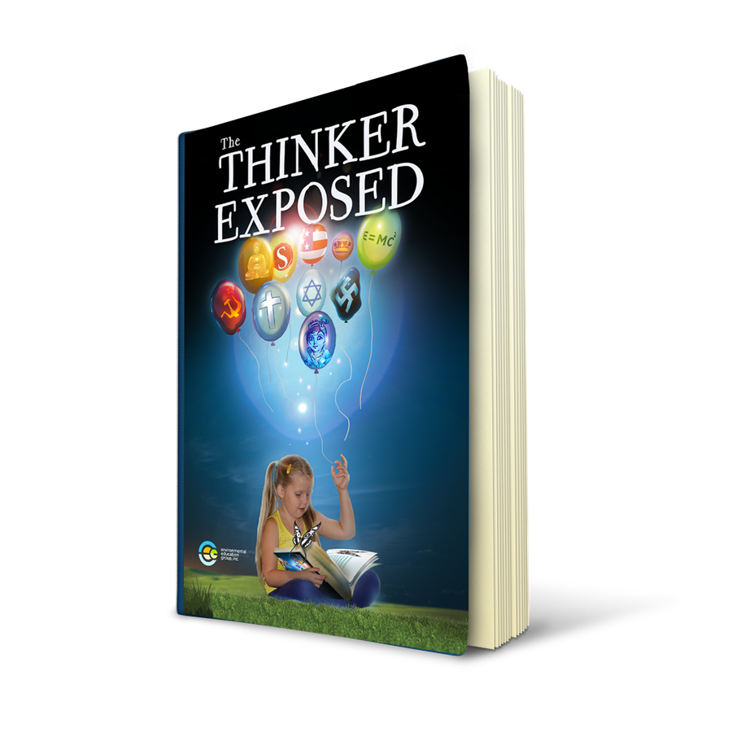
The Thinker Exposed
Coming Very Soon. Enter your name and email to be notified when we launch this work.
TikaKnows multi-media lessons
Curriculum and videos shared freely online with teachers and parents, to bring a deeper sense of continuity and a growing sense of responsibility in parents, teachers and children.
Watch the lessons →Litigation templates & pro se resources
Sample editable word docs for litigation including Complaint, Answer, Motions, Opposition, Reply, Petition, Discovery, Trial Brief, Witness List, Exhibit List and more.
Legal Self-Defense Academy →Complete Harmony articles & chapters
Article
What do we mean by complete harmony?
We can look at a guitar as life, and its strings as different dimensions reacting in life.
Each string is a different sound. If you take two different strings and they are not in tune, they just don't mix and you hear it.
When those two strings are in tune with each other, they create a harmony, and it is pleasant, and it works with its surroundings and all of life.
Harmony is the resonance of different elements that includes dimensions. There are different dimensions of our individual beings. We all experience different dimensions, for example when we go to sleep and we dream. How is it that we can fly in a dream? It is because we are in a different dimension. How is it that a dog can be a complete adult in one year? Because they live in a different dimension. A different time speed.
Even if one aspect of ourselves is seemingly in harmony with a particular experience, unless we are in tune with all of our dimensions, we are limited and we are incomplete.
If we didn't have a need or desire for complete harmony, there would be no reason to have the different dimensions we experience, or more then one string on a guitar.
And just like a guitar's strings have to be stretched and challenged to be tuned, an individual also has to have the apparent stress and experiences required that bring about the awareness of their individual path to harmony that blends and works on all levels.
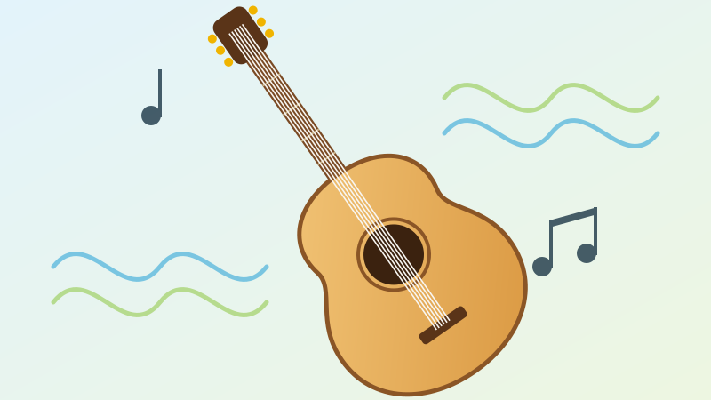

Article
The Final Dimension
When a root reaches in time a certain place in the ground, it may touch water, the source of it's life. In our creation & evolution, we have knowingly or unknowingly, like that root, sought deeper perspectives, seeking answers to our ultimate questions.
Now, for the first time in our created and evolved history, that water, those answers, and that guidance are upon our roots.
From a subconscious position known as the Final Dimension, our roots touch that water, and we can hear from the source of our life.
Chapters
Request further chapters through the contact form.
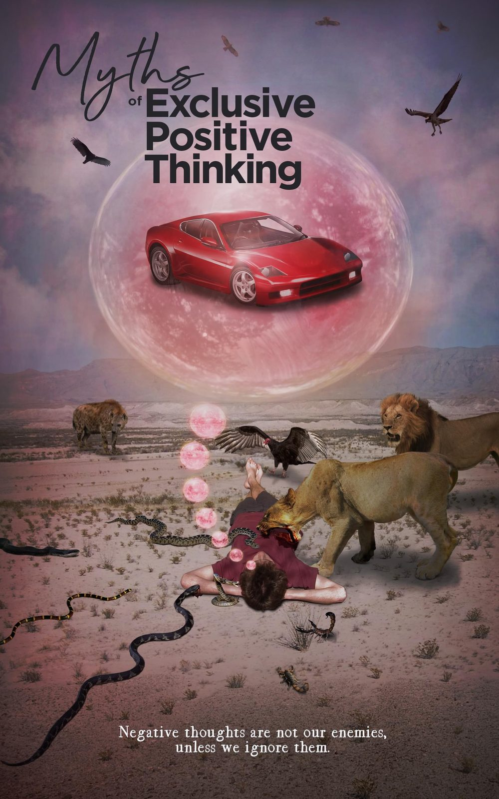
Chapter 4Myths of Exclusive Positive Thinking
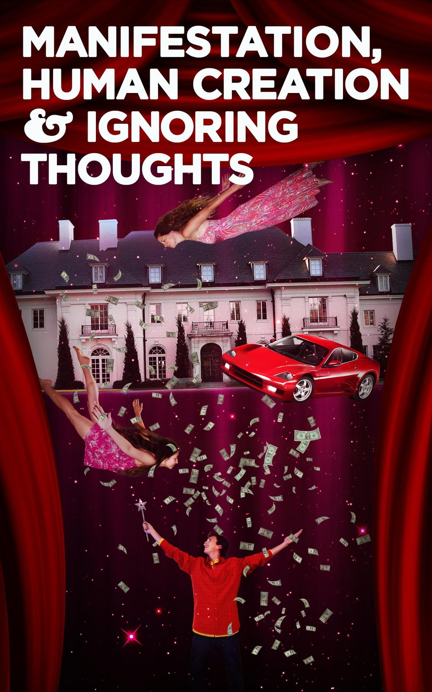
Chapter 5Manifestation, Human Creation & Ignoring Thoughts
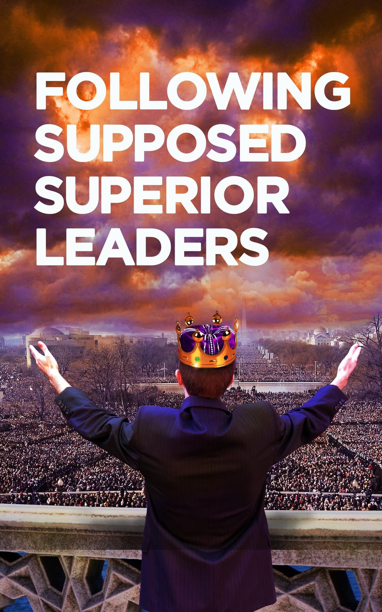
Chapter 6Following Supposed Superior Leaders
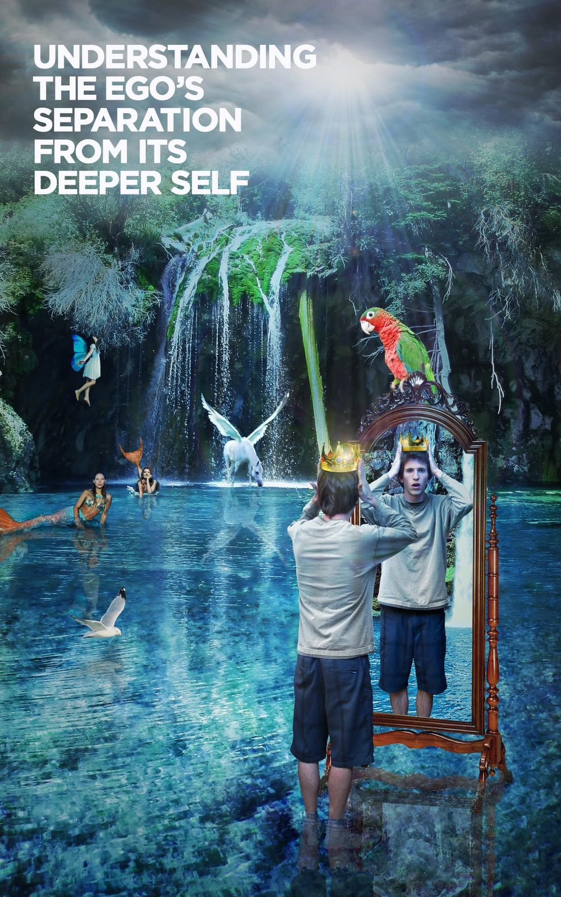
Chapter 7Understanding the Ego's Separation From Its Deeper Self
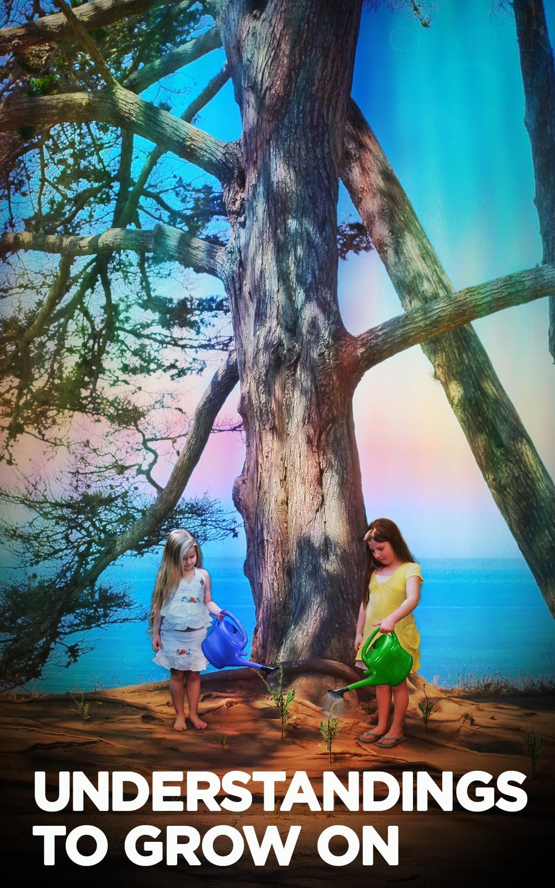
Chapter 8Understandings to Grow On
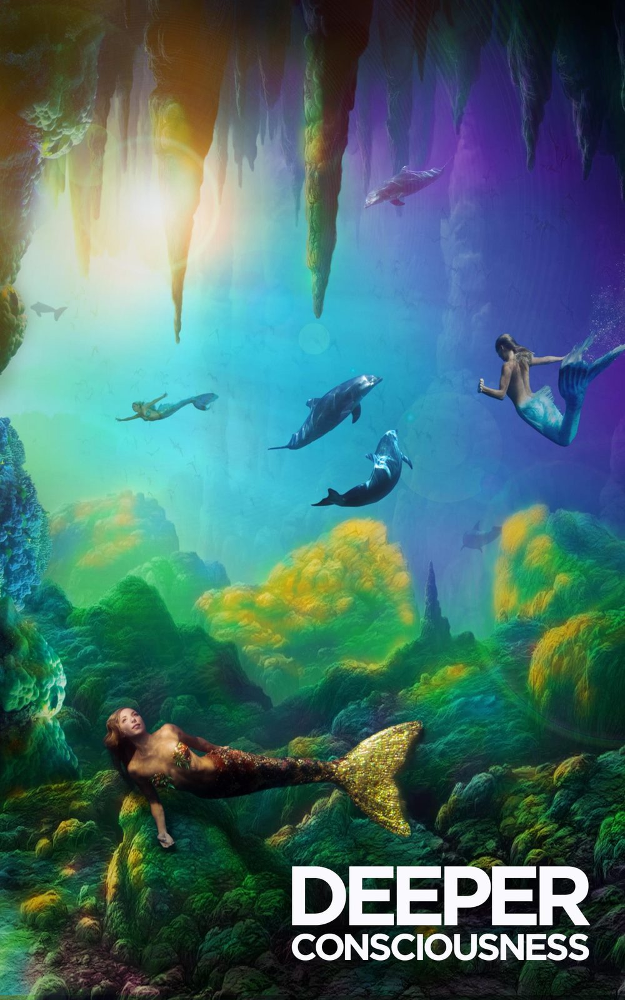
Chapter 9The Deeper Consciousness
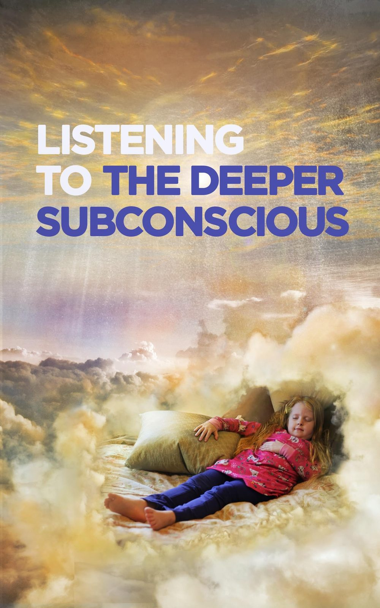
Chapter 10Listening to the Deeper Subconscious
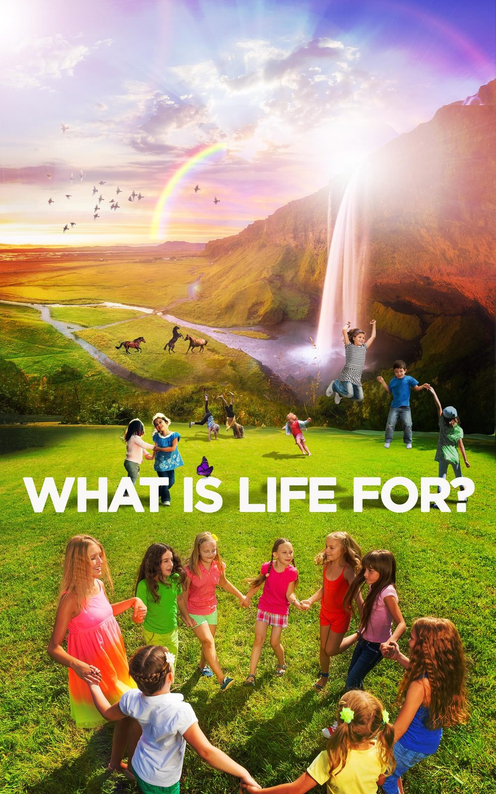
Chapter 11What is Life For?
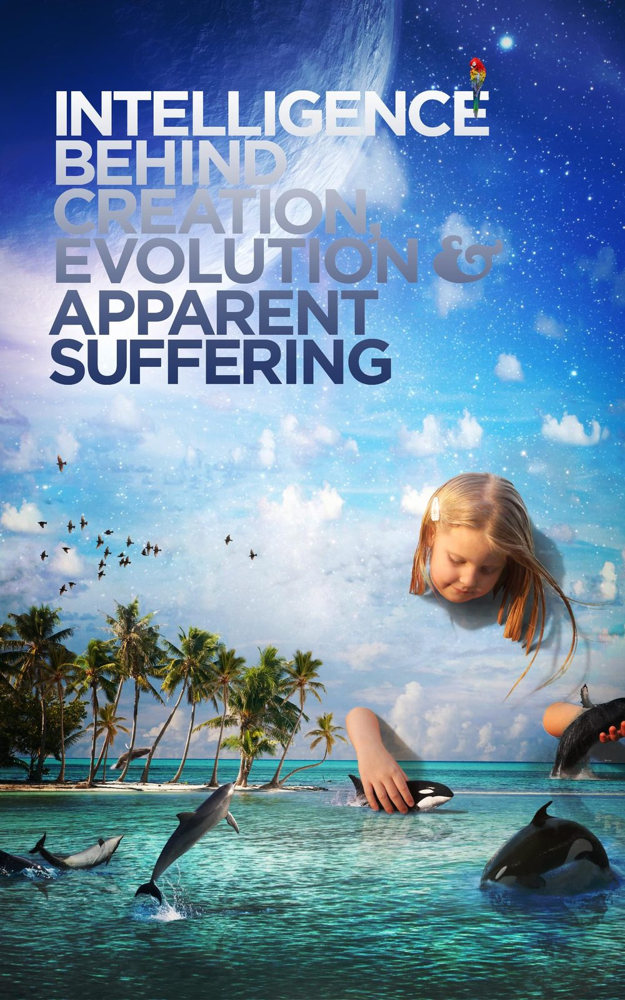
Chapter 12Intelligence Behind Creation, Evolution & Apparent Suffering
UN conference exhibit & historical archives
 1972 · Stockholm
1972 · Stockholm
The Exhibit Contribution
EEG was invited to the First International United Nations Conference on the Human Environment in Stockholm, Sweden in 1972. The Exhibit is still on permanent display at the Forum site of the conference.
Some of our history
EEG began in 1970 alongside the first Earth Day. In 1972 it became a tax-exempt educational and scientific research foundation and was invited to the First International United Nations Conference on the Human Environment in Stockholm.
Since then, EEG has published public interest reports and presented its California educational tour at venues across the state.
 Audio
Audio
Prof. Alan Tratner on GreenisGood Radio
“In 1972 EEG became a tax-exempt educational and scientific research foundation with a global mission.”